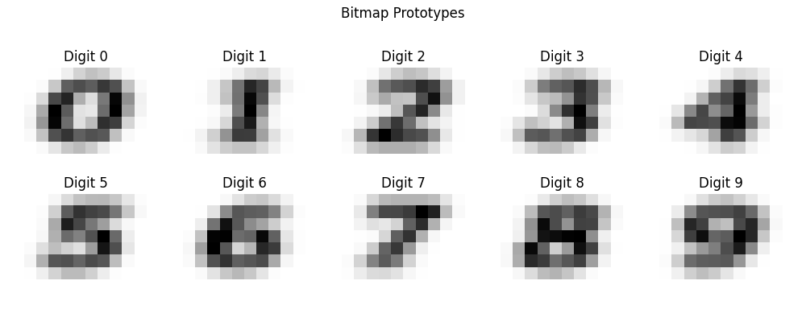
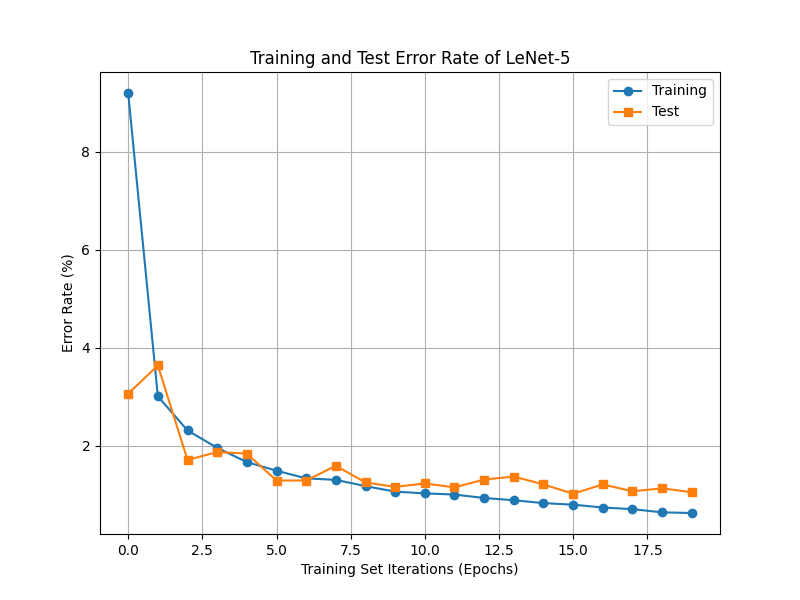
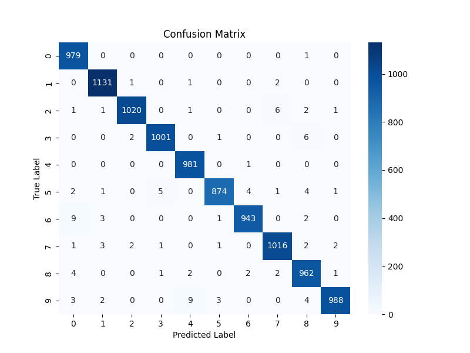
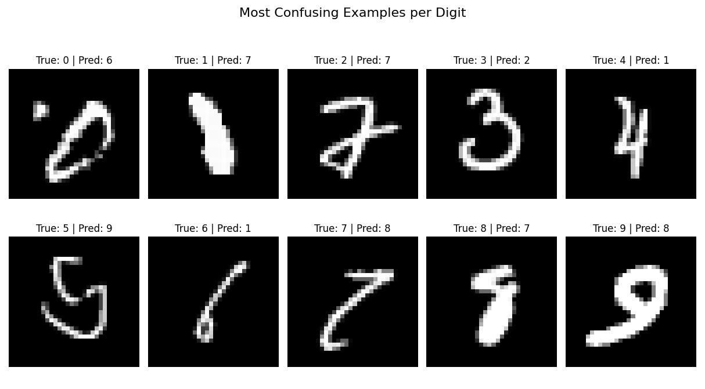
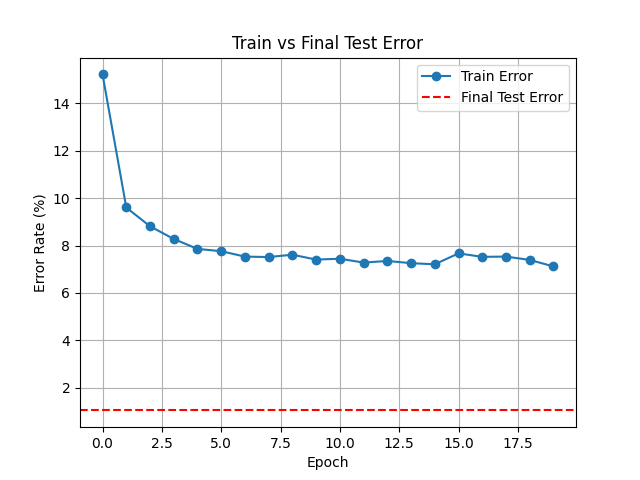
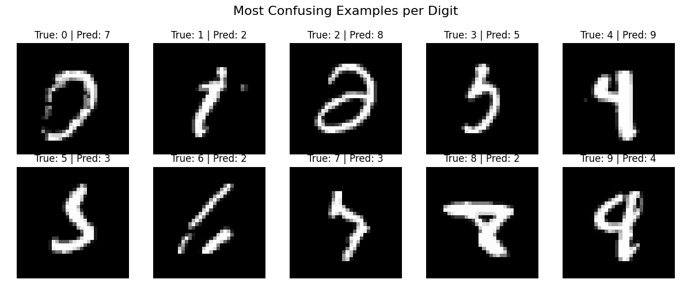
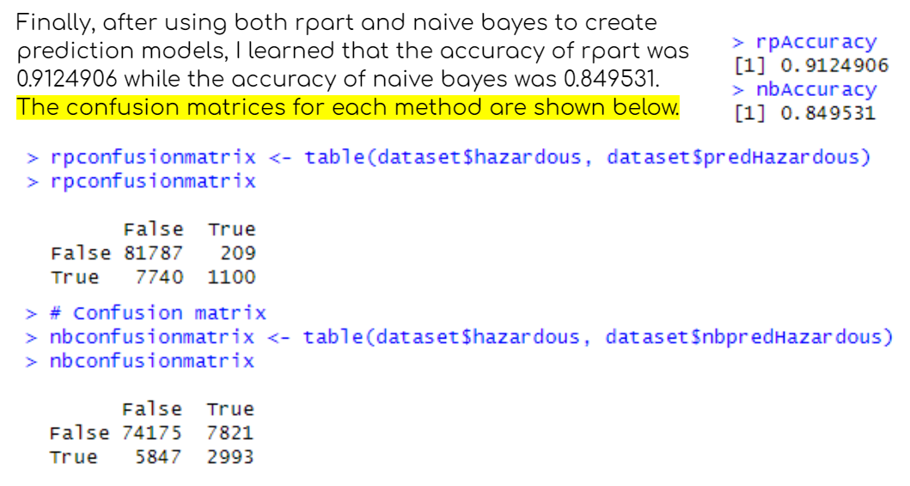
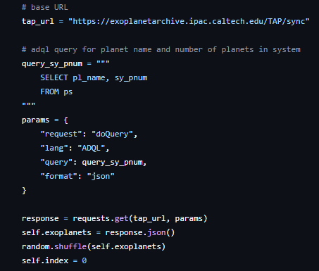

Aresty Research Assistant Project
Created modular Python code that configures, collects, and displays live data synchronously from the Lock In Amplifier (SR830) and Physical Property Measurement System (PPMS) instruments at the Rutgers Lab of Artificial Quantum Materials.
Helps physicists interface with laboratory equipment and gather and analyze data from experiments on quantum materials (see research poster for details!)
Functions: creates a GUI, records, plots, and stores data from the SR830 and PPMS, communicates with and configures the machines.
Tools: Numpy, Pandas, MatPlotLib, Pyvisa, MultiPyVu, Pymeasure, and more.
Nontechnical skills: research logging, creating code documentation and usage guides, communication, leadership, presentation.
Research Poster
LeNet-5 Pytorch Model - Image Classifier
Based on the paper "Gradient-Based Learning Applied to Document Recognition" by Yann LeCun, Leon Bottou, Yoshua Bengio, and Patrick Haffner.
We recreated the LeNet-5 model, which is an image classifier for the numerical digits (0-9), and created an improved version
of the model to better distinguish the digits and learn hidden patterns.
For the RBF parameters, we used the DIGIT dataset. Each digit (0–9) had several small 7×12 grayscale images. To generate the RBF prototypes, we loaded the image tensors from each digit’s directory, resized them to 7×12, and averaged all images for a given digit to create a representative prototype. This averaging approach reduces noise and yields a smooth, centralized prototype for each class, improving the robustness of the RBF classifier. These 84-dimensional flattened prototypes serve as the reference centers for the squared Euclidean distance computation in the RBF output layer.

Figure 1: Generated 7×12 bitmap prototypes for digits 0–9. Each image represents the average
shape of a digit from the DIGIT dataset.
Original LeNet Model
Training
Data: MNIST dataset from torchvision.datasets, resized from 28x28 to 32x32 using padding.
Batch size: 1
Loss function: Margin loss using equation (9) from the paper listed in the header.
Gradient descent: SGD optimizer with learning rate = 0.01 and momentum = 0.9
Tracking: Train and test error tracked at every epoch.
Epochs: 20

Figure 2: Training and Test Error Across Epochs (Original MNIST)
Performance Evaluation

Figure 3: Confusion Matrix on Original MNIST Test Set

Figure 4: Most Confusing Examples per Digit (True Label vs. Predicted Label)
LeNet Modification for Unseen Data
We implemented several modifications to enhance generalization on transformed and unseen data:
Performance on Unseen Data
As shown in the error rate graph, LeNet2 achieved rapid initial convergence, with training error decreasing from 21% to below 8% within the first few epochs. However, the test error remained consistently low and stable, around 1.1%, indicating strong generalization performance. Unlike the first model, LeNet2 avoided overfitting, likely due to the inclusion of dropout layers and a more resilient activation/pooling strategy. The final test error was 1.1%, corresponding to a test accuracy of 98.9% on the transformed MNIST dataset. 
Figure 5: Training and Test Error (LeNet2)

Figure 6: Confusion Matrix for Modified LeNet on Transformed MNIST Data 
Figure 7: Most Confusing Examples per Digit for Modified Model (True Label vs. Predicted Label)
frogspawn
WINNER of the Best Social Good Hack at HackHers 2023!
frogspawn is a chatbot that I made with my friends Kapila and Sabrina for the HackHers Hackathon, hosted at Rutgers University.
The main function of the bot is to generate frogs for the user,
inform them on endangered frog species, and encourage people to donate to and support preservation organizations. It also has other cool features,
like reacting to messages with "frog" emojis. 🐸
This project uses HTML, CSS, Javascript, GitHub, and Discord.js.
Check out the website and add the bot to your Discord server!

Calculate Implausible Bounds
SAP program developed for FirstEnergy Corp.
Interacts with over 6 million records, estimated to reduce billing team manual monthly reviewing workload by 60-80%.
The goal of this project is to replicate the billing team's logic so that we can reduce their workload when
they review monthly electricity usage. It will automate the process of determining "implausible" kilowatt hours of electricity usage
measured by a meter. For instance, if a value is too high or too low to be realistic, the meter might be broken. To determind this, we compare it with its
historical readings and calculate whether it is within plausible usage bounds.
Working with a data scientist, my goal was to experiment if it was possible to recreate his Python program in SAP, which would make it faster
to retrieve data and calculate plausible meter reading bounds. For each "bin" - ex. during a certain season, in a certain location -
I would take all the recorded meter readings and use percentiles to calculate the lower x% bound and higher y% bound
between which (y-x)% of the data fell.
Thus, rather than having each meter reading manually checked and approved by employees, the program would automate the process.
This project uses SAP ABAP and SQL queries to interact with the Oracle database.
Near-Earth-Objects Predictive Classifier
Data 101 Final Project: used R code on a dataset to predict whether asteroids/NEOs would be classified as hazardous or non-hazardous.
What I Did:
I used Kaggle to find a dataset I was interested in using, which was the “Nearest Earth Objects” dataset sourced from NASA. I plotted the variables from the
dataset to gain some insight into it. It had information on different asteroids and other NEOs such as their names, estimated sizes, relative velocity,
miss distance, absolute magnitude, and whether or not they were classified as hazardous. I then created a decision tree using rpart for the dataset to predict
whether or not an asteroid would be classified as hazardous based on its characteristics. I also used naive Bayes to create predictions, and then I compared
the accuracies of both methods using their confusion matrices.
This project is coded in R.
More details on GitHub!

Exoplanet Eradication
Work in progress!
I was inspired to make this game after watching "3 Body Problem" on Netflix and learning the Dark Forest theory.
Basically, this game is in the perspective of a human working for a company responsible for "global security and defense".
As the player continues getting through each level, they learn about the true nature of their employment.
Each level involves real exoplanets sourced from the NASA exoplanet archive.
This game is a personal project, and I am coding it in Python using the Pygame library.
This game uses TAP (Table Acccess Protocol) queries which incorporate SQL statements to access NASA databases, specifically
the NASA exoplanet archive.

Tic-Tac-Toe Solver
A first step into AI and game theory. Uses the "minimax" algorithm to find the best solution for a given tic-tac-toe board.
This project is coded in Python.
01:198:211 Computer Architecture
Note: While I can't post my code, as it is a violation of academic integrity policies, I can summarize my projects here.
- Finding the matrix determinant + matrix exponentiation
- Inserting nodes into sorted linked lists and binary search trees
- Working with graphs, DFS, BFS, finding cycles, and shortest path algorithms
- Programming a "cache" simulator which would store and dispose of memory according to requirements
- Using GDB debugger to complete the notorious Bomblab assignment, stepping through lines of code
- Converting integers and floating point numbers to binary, and vice versa, with specified constraints
These projects were coded in C on a Linux Ubuntu VM.
Team Astraea 6897 - Robotics
Coding Subteam 2019-2022
I participated as a robot programmer on my high school's FIRST (For Inspiration and Recognition of Science and Technology) robotics team.
During my time, I learned how to gather sensor data and use Java to program motors, drivebases, and pneumatics on the bot.
As a team, we collaborated on GitHub to write and test code that lets the robot run 100% autonomously.
I primarily programmed Ursa’s color sensors and drivebase mechanisms and mentored new members during the summer.
Here's an example of one of my beginner projects.
This project is coded in Java.
P.S. I'm pictured on the left-most side of this image!